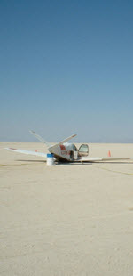
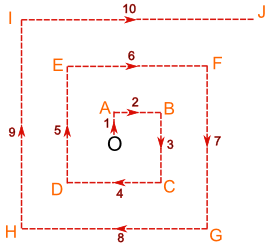
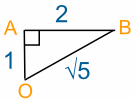
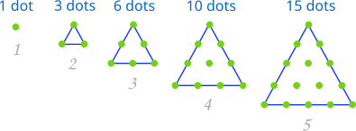
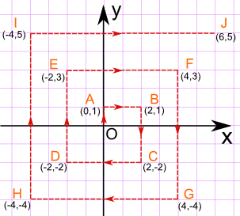
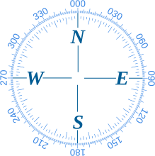

Activity: A Walk in the Desert

Crash!
Jade has crash-landed in the desert.
There's a village somewhere nearby, direction unknown.
So Jade comes up with a cunning plan:
- Fill up a water bottle from the plane, and take a compass,
- Then walk 1 km north, change direction and walk 2 km east, then 3 km south, 4 km west, 5 km north, 6 km east, and so on, like this:

This way Jade will find the village no matter what direction it is in, and can (hopefully) find the way back to the plane for fresh water and shade when needed.
But Jade needs to know, at the end of each stage:
- The total distance walked
- How far (in a straight line) back to the plane
OK, Let's Do the Calcs ...
After one stage of the journey, Jade has reached point A:
- Jade has walked 1 km altogether
- And is 1 km (in a straight line) from the plane
After two stages, Jade has reached point B:
- Jade has walked 3 km altogether
- To answer the second question, we make a right triangle OAB:

We can calculate the length of OB using Pythagoras' Theorem, as follows:
So the answer in this case is:
At Point B, the distance back to the plane (in a straight line) is √5 km
After three stages, Jade is at point C:
| Point | Distance walked altogether |
Distance (in a straight line) from O |
|---|---|---|
| O | 0 | 0 |
| A | 1 | 1 |
| B | 3 | √5 |
| C | 6 | |
| D | ||
| E | ||
| F | ||
| G | ||
| H | ||
| I | ||
| J |
After three stages, Jade is at point C with coordinates (2, −2):
- Distance walked: 1 + 2 + 3 = 6 km
- Straight-line distance: √22 + (−2)2 = √4 + 4 = √8 km
Hey, it's your turn now!
Fill in all the other values ... if it gets hard, read below for some help
How To Make It Easier
Distance walked altogether
At the end of each stage, the total distance is the sum of the series 1 + 2 + 3 + 4 + 5 + 6 + ...
So just add the new distance each time.
OR you can calculate each value using:
n(n + 1)/2
where n is the number of stages.
Like this:
| Number of stages (n) |
Total distance walked = n(n + 1)/2 |
| 1 | 1 × 2 / 2 = 1 |
| 2 | 2 × 3 / 2 = 3 |
| 3 | 3 × 4 / 2 = 6 |
| 4 | and so on ... |
This works because it is the Triangular Number Sequence:

Try doing the calculations both ways, for fun.
Distance (in a straight line) from O
To work out the distance back to the plane, we can map out the journey on a Coordinate Grid, like this:

Now it is just a matter of finding the distance between two points
The distance between the points (xA,yA) and (xB,yB) is given by the formula:
c = √(xA − xB)2 + (yA − yB)2
and one of those points is always the origin, which is at (0,0), so when xB and yB are zero we get:
Example, for the point E (−2, 3), x = −2 and y = 3, and so:
Hopefully that will help make your job easier.

Direction?
There's one more thing Jade must know: to get back to the plane, what compass bearing to use?
This will be covered in Activity: A Walk in the Desert 2